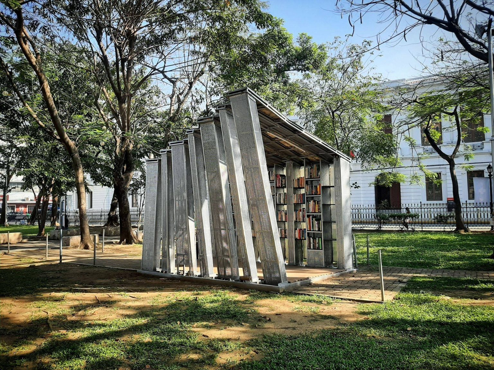
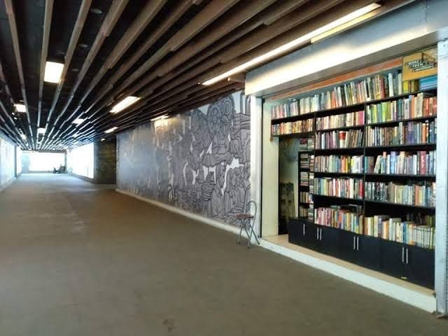
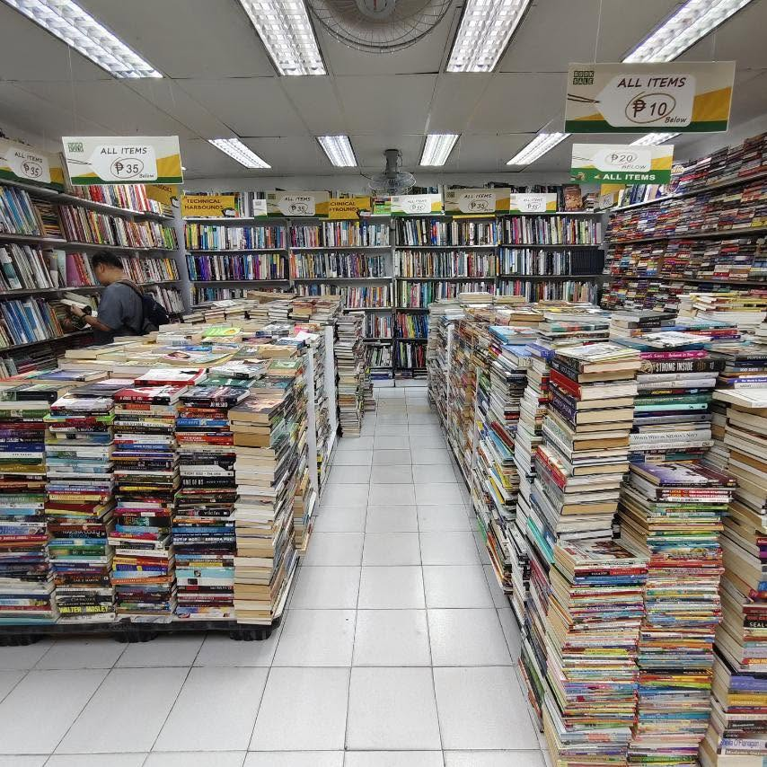

The Book Stop Project
Located at Plaza Roma in Intramuros, The Book Stop Project provides a space where people can discover and exchange books while enjoying the historic surroundings of Manila.
Location: Plaza Roma, Intramuros
Discover bookstores around Manila where you can find interesting, affordable, and unique books.

Located at Plaza Roma in Intramuros, The Book Stop Project provides a space where people can discover and exchange books while enjoying the historic surroundings of Manila.
Location: Plaza Roma, Intramuros

Books from Underground is located at the Lagusnilad Underpass and offers readers an interesting selection of books in an unusual location.
Location: Lagusnilad Underpass

Booksale offers affordable books for readers looking for different titles and genres. The Pedro Gil branch is one of the bookstores included in this list.
Location: Pedro Gil Branch